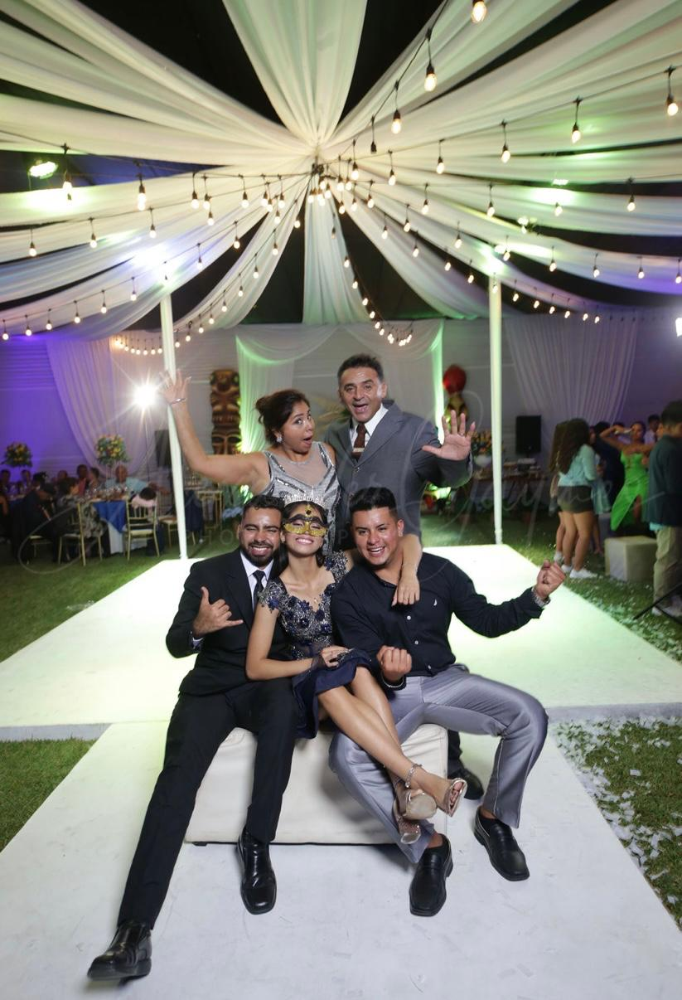
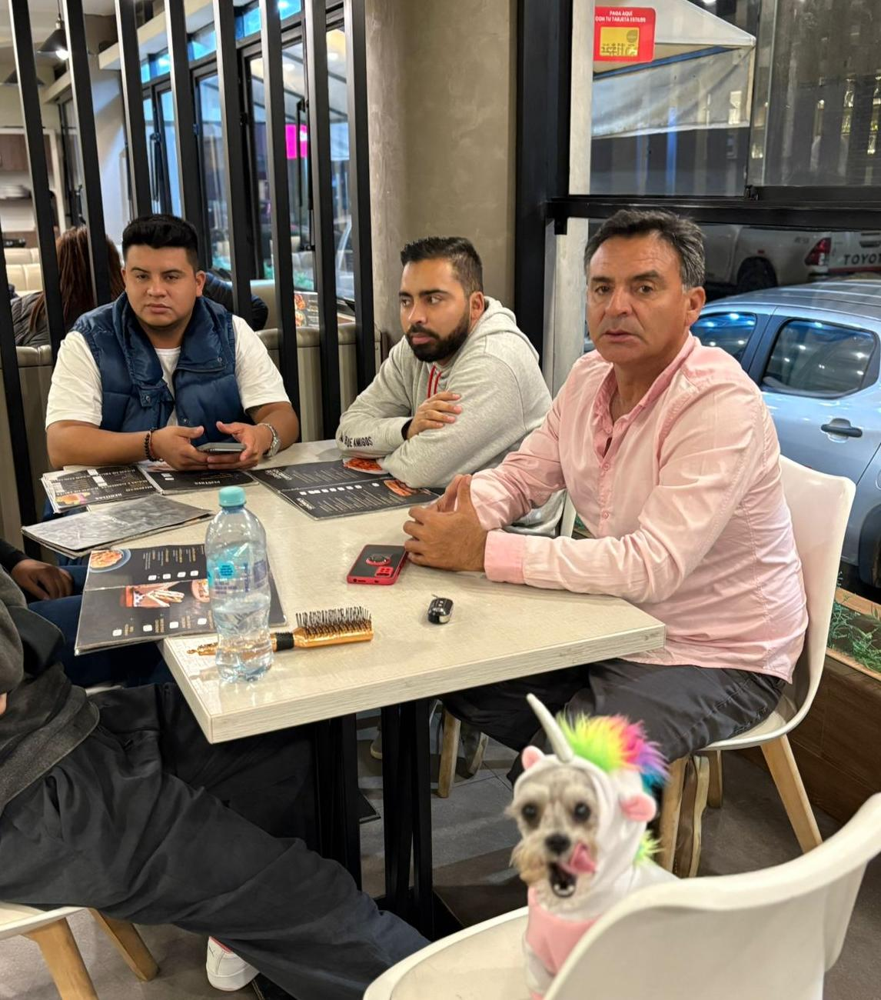
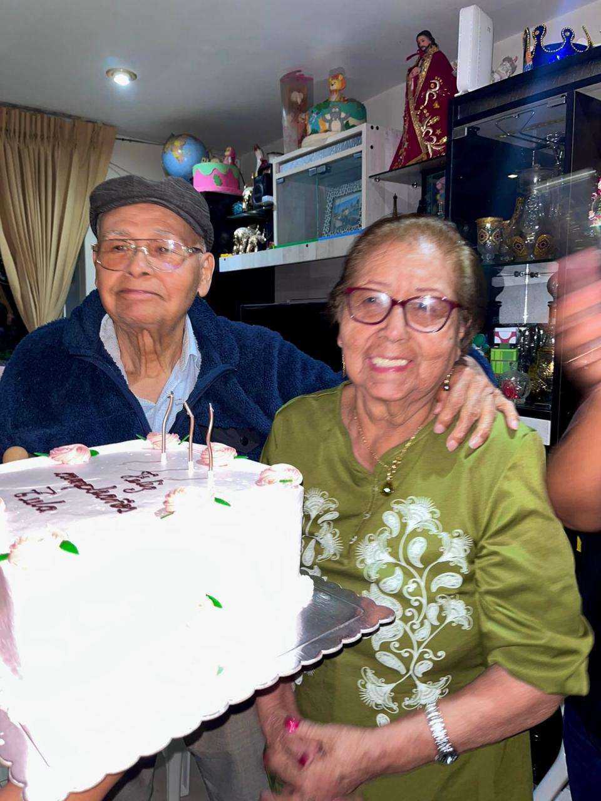

De criatura
Mi infancia
Desde muy pequeña crecí rodeada de animales, algo que marcó mucho mi forma de ser. Pasaba gran parte de mi tiempo con mis mascotas y aprendí a desarrollar un gran cariño y respeto por los animales. Mi familia siempre me cuenta que era una niña muy curiosa, observadora e inteligente, con muchas ganas de entender cómo funcionaban las cosas. También dicen que tenía un carácter fuerte desde temprana edad: no solía llorar con facilidad y, cuando me proponía algo, era difícil hacerme cambiar de opinión. Creo que esa combinación de curiosidad, determinación y amor por los animales me ayudó a formar gran parte de la persona que soy hoy.


Mi Familia
Mi Sangre
CARAZAS - SEGOVIAVengo de una familia de cinco: soy la menor de tres hermanos, con 10 y 11 años de diferencia con mis hermanos mayores. Eso me enseñó desde chica a defenderme sola y a valorar cada cosa que logro. En mi casa siempre hemos sido bastante particulares, toda mi vida he estado rodeada de bastantes animales, hoy en día tenemos: tenemos 6 perros, un gato, un conejo y mi mamá cría 60 gallinas aproximadamente. Los animales siempre han sido parte de nuestra familia.





Mis Hermanos


Mis Abuelos

Mis Mascotas


Mis Relaciones
Mi Familia Extendida
Mis familias, los Carazas y los Segovia, ambas representan una mezcla de quien soy. Gracias a ambas he crecido rodeada apoyo y enseñanzas que han marcado mi vida. Aunque cada familia tiene sus propias historias, costumbres y personalidades, las dos comparten valores que admiro profundamente: la unión, el esfuerzo, la humildad y el compromiso con los demás. Cada una de estas personas afrentan desafíos diferente, viven una historia diferente, y no importa el golpe, ellos se mantienen firmes sin importar cuál sea el problema, siempre hay salida.


Mis Amigos
En cuanto a mis relaciones personales, no tengo muchos amigos, pero los que tengo son personas muy importantes para mí. Valoro mucho la amistad, la confianza y la lealtad. Considero que una de mis fortalezas es que suelo conectar fácilmente con las personas y crear vínculos genuinos incluso en poco tiempo. Si tuviera que describirme en pocas palabras, diría que soy una persona perseverante, curiosa, apasionada por aprender, cercana con quienes me rodean y con muchas ganas de vivir experiencias que me permitan crecer. Tengo muchos sueños por cumplir, muchas metas por alcanzar y, por supuesto, muchas aventuras y locuras por vivir en el camino.


Mis Talentos
Académico
NOTAS DEL COLEGIOEn el ámbito académico, siempre me he esforzado por dar lo mejor de mí. Durante mi etapa escolar logré mantenerme entre los primeros puestos, alcanzando el segundo lugar de mi promoción. Además, siempre he tenido interés por aprender IDIOMAS, por lo que también estudié inglés y francés. Aprender nuevos idiomas me permitió ampliar mi visión del mundo, desarrollar nuevas habilidades de comunicación y prepararme mejor para los retos académicos y profesionales que deseo enfrentar en el futuro.


Deportes
VOLEY

TAEKWONDO

AJEDREZ

NATACIÓN
ATLETISMO

BODYBOARDING

PING PONG

BILLAR

Arte
MúsicaSAXOFÓN

VIOLÍN

CANTO

ACTUACIÓN